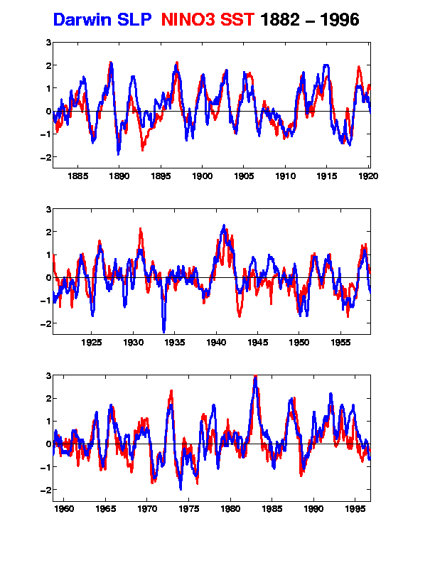
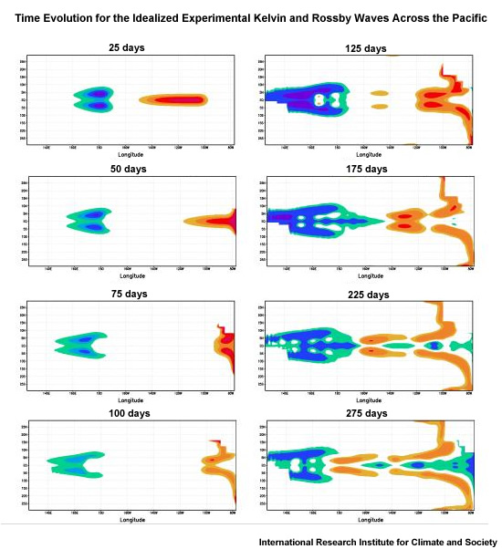

ENSO, where ocean plays a leading role
Contents
ENSO, where ocean plays a leading role#
No single thing abides;
but all things flow. Fragment to fragment clings–the things thus grow
Until we know and name them. By degrees
They melt, and are no more the things we know.— Lucretius (c. 99-55 B.C.)translated by W. H. Mallock
What is ENSO?#
{kind=link}
Fig. 18 Schematic diagram showing the SST (shaded) and sea level pressure (represented by “H” and “L” which indicate the high and low pressure center, respectively). Credit: NOAA#
El Niño (EN in ENSO)#
Peruvian fishermen found every couple of years around Christmas time, the ocean along the westernmost shores of South America became unusually warm, and they had bad anchovy harvest. They named this phenomenon El Niño, “the Christ child”. For a long time, El Niños were thought to be an ocean phenomenon.
Southern Oscillation (SO in ENSO)#
Gilbert Walker found a connection between barometer readings at stations on the eastern and western sides of the Pacific (Tahiti Island and city Darwin). He coined the term Southern Oscillation to dramatize the ups and downs in this east-west seesaw effect.
ENSO Neutral#
Jacob Bjerknes was the first one to recognizes that El Niño is not just an oceanic phenomenon. In stead, he hypothesized that the warm waters of El Niño and the pressure seasaw of Walker’s Southern Oscillation are part and parcel of the same phenomenon: the ENSO. Nowadats, we use El Niños and La Niñas represent the warm and cold phases of ENSO. The condition shifts back and forth between the two phases, around the ENSO neutral, which is the condition when there is zero fluctuation. Before we dive into the exciting El Niños and La Niñas, let’s first understand how the tropical atmosphere and ocean are like during ENSO neutral.
Hadley Circulation#
{kind=link}
Fig. 19 Warm, moist air from the equator rises in the atmosphere and eventually cools and sinks a bit further north in the tropics. This phenomenon is called the Hadley circulation/cell. Credit: NASA/JPL-Caltech#
Trade Wind#
Earth’s rotation causes the winds to curve toward rigtht in the Northern Hemisphere and left in the Southern Hemisphere. The lower branches of the Hadley Cell thus form easterly winds (note: an easterly wind is a wind that blows from the east), also called the trade winds. The winds help ships travel west, and they can also steer storms such as hurricanes, too. A narrow band centered at the equator has almost no wind, and is called the doldrums. Europeans have known the trade winds before they found Alaska. \(\Downarrow\)
{kind=link}
Fig. 20 Herman Moll’s 1736 world map with the trade winds. source: Wikipedia.#
{kind=link}
Walker Circulation#
Different from the Hadley Circulation, which is a meridional circulation, the Walker circulation is a zonal circulation located at the equator. A more important difference is that the Hadley Circulation which would exist no matter whether there is a watery ocean underneath, the walker circulation, however, is a result of air-sea interactions.
{kind=link}
Fig. 21 The east to west movement of the trade wind along the equatorial Pacific Ocean works on the water below it, resulting in an east to west current near the surface. The accumulation of warm surface waters in the equatorial Western Pacific pushes the thermocline down and causes the western Pacific warm pool. As the surface water existing from the equatorial eastern Pacific, the cold and nutrient rich subsurface waters upwell to compensate the advective surface water loss. This form a narrow equatorial strip of relatively low SSTs in the eastern Pacific, often referred to as the cold tongue. The thermocline is slanted down hundreds of meters from east to west across the equatorial Pacific Ocean, and the sea levels in the western Pacific, for example, in Indonesia, can be up to 50 cm higher than those in the eastern Pacific, for example, in Peru. The low level winds converge over the western Pacific warm pool and rise. The very moist air rises creates heavy rainfall in the region. The air releases its moisure at high altitude and diverges out of the top of the convective region, moving out over the eastern Pacific to sink over the cooler waters. NOAA Climate.gov drawing by Fiona Martin.#
Given that the coastal city Darwin is in the Northern Australia and the Tahiti island is in the south central Pacific, can you tell where to measure a higher sea level pressure (SLP)?
As the low level air rises in the equatorial western Pacific and sinks in the equatorial eastern Pacific, the SLP is relatively high near Tahiti and relatively low near Darwin.
ENSO Phases#
{kind=link}
Fig. 22 This diagram shows a model of surface temperatures, winds, areas of rising air, and the thermocline (blue surface) in the tropical Pacific during El Niño, normal, and La Niña conditions. During El Niño, the warm pool of water moves eastward and the slope of the thermocline flattens. The equatorial eastern Pacific become abnormally warm, so El Niño is called the warm phase of ENSO. During La Niña, the cold phase of ENSO, the warm pool moves westward, and the slope of the thermocline steepens. source: PMEL#
{kind=link}
Fig. 23 Moving diagrams shows ENSO changing phase. source: John Baez’s blog#
Given that the Nino3 index is the sea surface temperature anomaly averaged over a specified area of equatorial eastern Pacific and the Southern Oscillation Index (SOI) is given by the SLP at Tahiti minus SLP at Darwin, can you tell how Nino3 and SOI are correlated (positively or negatively)?

ENSO Impacts#
{kind=link}
Fig. 24 Figure 1.2 in McPhaden et al.’s book Typical impacts of La Niña on global weather patterns during the peak season of development in December–February (after Ropelewski & Halpert, 1987; Courtesy of NOAA/Climate Prediction Center).#
{kind=link}
Fig. 25 The IRI seasonal forecasts of precipitation for the next three months. Note we are currently experiencing a “triple-dip” La Niña.#
Broader impacts:
Growth Mechanism - Bjerknes feedback#
The growth mechanism is the mechanism that is responsible for amplifying SST anomalies during both the warm and cold phases of the ENSO cycle. El Niño arises through reinforcing feedbacks between changes in surface winds and SSTs (Bjerknes, 1966, Bjerknes, 1969).
{kind=link}
Fig. 26 During El Niño, the trade winds systematically weaken, which allows warm water piled up in the west to migrate eastward. Upwelling is also reduced, causing SSTs in the eastern Pacific to rise. Warming east of the dateline causes the ascending air masses, deep convection, and heavy rainfall to shift eastward as well. This in turn leads to a further relaxation of the trade winds to the west of the convective center, causing additional surface warming along the equator. This self‐amplifying sequence of events involving weakening zonal winds, warming sea surface temperatures, and reduction in equatorial upwelling has been widely referred to as the “Bjerknes feedback.” – M. McPhaden Picture credit: NOAA Climate.gov drawing by Fiona Martin.#
Phase transition Mechanism#
Any successful theory for the phase-transition mechanism has to be able to
(1) provide a negative feedback to reverse the phase of the ENSO cycle, and
(2) account for the long period associated with the cycle.
Delayed Oscillator (we will only discuss this mechanism in class) - Suarez and Schopf (1988), Battisti & Hirst (1989)
Recharge Oscillator - Wyrtki (1975), Wyrtki (1985), Cane (1986), Jin (1997)
Western Pacific Oscillator - Weisberg and Wang (1997)
Advective-Reflective Oscillator - Picaut et al. (1997)
Delayed Oscillator#
Kelvin wave#
The dispersion relationship of the equatorial Kelvin wave is:
Note
Equatorial Kelvin waves propagate eastward and are non-dispersive.
Do you know why?
From the dispersion relation we know the phase speed \(c=\frac{\omega}{k}\) quals group speed \(c_p=\frac{\partial \omega}{\partial k}\). Also, the direction of group speed represents the direction of energy propagation, energy of Equatorial Kelvin waves also propagates eastward.
The dispersion relationship of mode-1 (n=1) equatorial Kelvin wave looks like this \(\Downarrow\).
import numpy as np
import matplotlib.pyplot as plt
k = np.arange(0,10,.1)
c = 1
omega_kelvin = k*c
fig = plt.figure(figsize=(6, 6))
ax = fig.add_subplot(111)
ax.plot(k, omega_kelvin, label='Kelvin wave', lw=4)
ax.set_aspect('equal')
ax.set_xlim([-4,2])
ax.set_ylim([0,4])
ax.set_xlabel('$kL_{eq}$', fontsize=30)
ax.set_ylabel('$\omega/(\\beta L_{eq}$)', fontsize=30)
ax.plot([-10, 10], [0, 0], 'k')
ax.plot([0, 0], [-10, 10], 'k')
ax.legend(fontsize=15)
<matplotlib.legend.Legend at 0x1127f2e20>
Recall that the dispersion relationship is a relation between the wave vector \(\vec{K}\) and the frequency \(\omega\), \(c_n\) is the phase speed of the \(n_\text{th}\) baroclinic mode Kelvin wave.
\(c_0=\sqrt{gH}\) is the phase speed of the barotropic mode. With the average depth of the ocean \(H\) is about 4000 m and \(g\sim\)10 ms\(^{-2}\), \(c_0\) is about 200 ms\(^{-1}\). For the first baroclinic mode in the ocean, a typical value of \(c_1\) is 2-3 ms\(^{-1}\) (Wunsch and Gill, 1976). So a mode-1 Kelvin wave would take about 2-3 months to cross the Pacific Ocean.
Can you identify Equatorial Kelvin waves and their propagation direction from the animation of Satellite-observed sea surface height anomalies?
Hovmöller diagram equtorial Kelvin waves:
{kind=link}
Fig. 27 Fig. 2 in McPhaden 1997 Time versus longitude sections of anomalies in surface zonal wind (left), SST (middle), and 20°C isotherm depth (right) from September 1996 to August 1998. Analysis is based on 5-day averages between 2°N and 2°S of moored time-series data from the TAO array. Positive winds are westerly, and positive 20°C isotherm depths indicate a deeper thermocline.#
Rossby wave#
The dispersion relationship of the equatorial Rossby wave is:
Here j=1,2,3,… is the number of “meridional modes”. Similar to the combinition of continuous stratification and boundary condition giving rise to “baroclinic modes” for gravity waves, the combinition of continuously varying coriolis parameter and boundary condition gives rise to “meridional modes” for Rossby waves (interested students may read Lecture 18 of Pelosky’s text book).
Note
Long Rossby waves and energy propagate westward and are non-dispersive.
Short Rossby waves propagate westward, but energy propagates eastward, and are dispersive.
Can you prove this?
Hints:
The dispersion relationship for long Rossby wave is: \(\omega=-\frac{c_n k}{2j+1}\)
The dispersion relationship for short Rossby wave is: \(\omega=-\frac{\beta}{k}\)
The dispersion relationship of mode-1 (j=1) Rossby wave looks like this \(\Downarrow\).
# non-dimensional dispersion relation omega = -k/(k^2+(2j+1)),
# where omega scaler is beta*Leq, Leq=sqrt(cn/beta) is equatorial Rossby radius,
# k scaler is 1/Leq
j = 1
omega_rossby = -k/(k**2+2*j+1)
fig = plt.figure(figsize=(10, 5))
ax = fig.add_subplot(111)
ax.plot(k, omega_kelvin, label='Kelvin wave', lw=4)
ax.plot(-k, -omega_rossby, label='Rossby wave', lw=4)
ax.set_aspect('equal')
ax.set_xlim([-4,2])
ax.set_ylim([0,2])
ax.set_xlabel('$kL_{eq}$', fontsize=30)
ax.set_ylabel('$\omega/(\\beta L_{eq}$)', fontsize=30)
ax.plot([-10, 10], [0, 0], 'k')
ax.plot([0, 0], [-10, 10], 'k')
ax.legend(fontsize=15)
<matplotlib.legend.Legend at 0x1128f9ee0>
For the first meridional mode (j=1), the speed of long Rossby wave is \(-\frac{c_n}{3}\), which is 1/3 of Kelvin wave speed. Thus Rossby wave takes 6-9 months cross the Pacific Ocean.
Delayed Oscillator#
If the trade winds weaken, an initial westerly wind stress anomaly in the central Pacific causes the generation of an eastward propagating and downwelling oceanic Kelvin wave. These Kelvin waves carry signals of anomalous warming and after a couple of months arrive at the western coast of the Americas.
Coincident with the eastward-moving Kelvin wave are westward-moving Rossby waves.
{kind=link}
Fig. 28 Fig. 4.29 in Laing and Evans’s 2021 textbook Idealized model of a single equatorial eastward-moving Kelvin wave generated by wind stress anomaly (red and orange) and corresponding Rossby waves propagating westward.#
Given the typical time for Equatorial Kelvin waves and Rossby waves to cross the Pacific Ocean, can you predict where the upwelling and downwelling anomalies are after 3 months, 9 months, and one year?
Fig. 4.30 in Laing and Evans’s 2021 textbook Time evolution for the idealized experimental waves generated in the picture above. Picture credit: IRI

A tale of the 1982/83 El Ni\(\tilde{n}o\)#
The 1982–83 El Ni\(\tilde{n}o\), which was neither predicted nor even detected until nearly at its peak, caught the scientific community completely by surprise.
At the time, most in situ oceanographic data collected were available only many months or, in some cases, years after collection. Some data on oceanic and atmospheric conditions from islands and volunteer observing ships were available in real time (within a day) or near real time (within a month for climate purposes), but they were far too few and scattered to be of much value in providing a coherent picture of evolving conditions. NOAA satellites capable of high-precision measurements of SST from space had been launched for the first time in 1981. However, unbeknownst to NOAA, SST retrievals after March 1982 were contaminated by stratospheric aerosols from the eruption of El Chichon. The aerosols produced a cold bias in the satellite SSTs that was mistakenly interpreted as clouds. These biased retrievals were flagged as bad and replaced with climatology in gridded analyses of the data. Thus, throughout much of 1982, SST analyses based on satellite data indicated near normal conditions in tropical Pacific. Moreover, those few in situ data that showed extraordinarily warm SSTs several degrees Celsius above normal were rejected as erroneous because they did not agree with the satellite analyses. – M. McPhaden
{kind=link}
Fig. 29 Fig. 3 in Morris et al., 2022 Morden technologies and instruments that measure the ocean. However, they either were not born or failed to capture the 1982–83 El Ni\(\tilde{n}o\).#
{kind=link}
Fig. 30 Fig. 7 in Cruz-Reyna and Del Pozzo (2008) Initial explosion of the plinian eruption of April 3, 1982 (photo by S. De la Cruz-Reyna taken from Ostuacán.#
The 1982/83 El Ni\(\tilde{n}o\) stimulates observation#
The 1982-1983 El Niño was one of the strongest and most devastating El Niño events in recorded history, which caused between 1,300 and 2,000 deaths and more than $13 billion in damage to property and livelihoods. The climatic and societal impacts of the stunning 1982–1983 El Niño helped motivate the Tropical Ocean Global Atmosphere (TOGA) program (McPhaden et al., 2010).
{kind=link}
Fig. 31 Fig. 2 in McPhaden et al., 2010 The Tropical Ocean Global Atmosphere (TOGA) program was carried out between 1985 and 1994. The data greatly benefited the study of ENSO dynamics as well as ENSO prediction. TOGA’s successors are Tropical Atmosphere Ocean (TAO) led by the US and TRIangle Trans-Ocean buoy Network (TRITON) led by Japan, and observations are updated online daily.#
Brain Storm#
Why Only Pacific Has ENSO?
Based on the delayed oscillator theory of ENSO, the ocean basin has to be big enough to produce the “delayed” from ocean wave propagation and reflection.
It can be shown that only the Pacific Ocean is “big” (wide) enough to produce such delayed for the ENSO cycle.
It is generally believed that the Atlantic Ocean may produce ENSO-like oscillation if external forcing are applied to the Atlantic Ocean.
The Indian Ocean is considered too small to produce ENSO.
Why ENSO has a preferred period of 2 to 7 years?
Hints:
Western Pacific moonsoon has a 1-year period
The quasi-biennial oscillation (QBO) is a quasiperiodic oscillation of the equatorial zonal wind, has a 2-year period
Equatorial waves connect the western and eastern Pacific Ocean, the time scale for Rossby waves to propagate across Pacific is at order of one year. Waves of higher modes propagate slower. Recall the dispersion relationship for long Rossby wave, \(\omega=-\frac{c_n k}{2j+1}\).
Resources#
General Reading:
Books:
Introduction to Tropical Meteorology by Laing and Evans, Chap. 4.2.1
Waves in the Ocean and Atmosphere by Joe Pedlosky, Chap. Equatorial Beta-Plane and Equatorial Waves
El Niño Southern Oscillation in a Changing Climate by McPhaden et al.
Visualizations & data:
Visulize Equatorial waves: Data in Action: New NASA Sea Surface Height Grids to Study the Climate